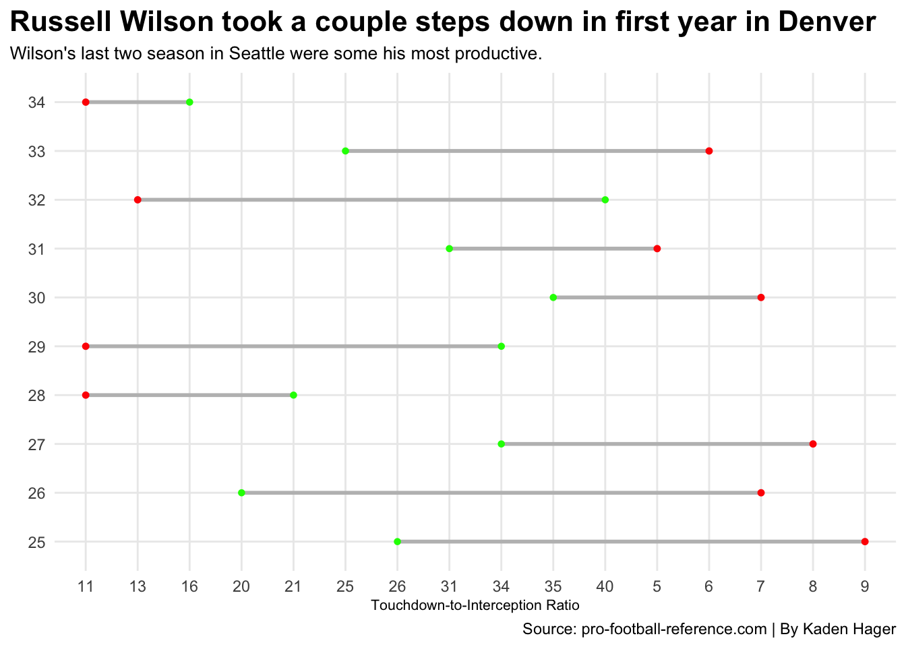
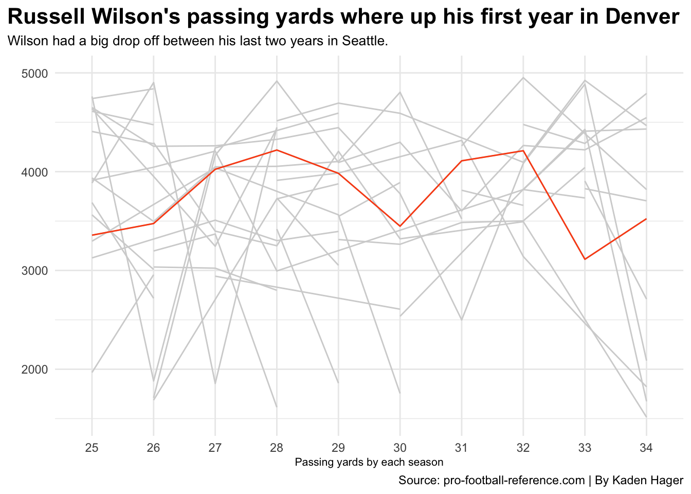

Ever since the Denver Broncos won the Super Bowl in 2016, it’s been an absolute disaster at the quarterback position since the retirement of Peyton Manning.
Last winter, the Broncos went all in on getting a franchise-level quarterback, acquiring eight-time pro-bowler Russell Wilson from the Seattle Seahawks. Denver gave up three players four draft picks across the 2022 and 2023 season.
Well, Wilson’s first season in Denver didn’t go as planned. Posting a 5-12 record and raising a lot of skepticism on the quarterback’s productivity. It raised a lot of questions if he could produce at the all-pro level that he had been performing at throughout his career.
Here is a deeper dive into some of his statistics since his 2013 Super Bowl season to see if Wilson is actually washed or not.
First, a look at his completion percentage and QBR over the last nine seasons.
To be a productive quarterback in the NFL, coaches and analysts like to see quarterbacks at or above the 60 percent range. Wilson’s completion percentage has never dipped below 60 percent, even in his first year at Denver where it was considered one his worst seasons. His first year in Denver was his lowest in his career, but still productive for an NFL quarterback.
But, his QBR is a different story. Wilson posted a career low in QBR last season with a 36.7 QBR rating. The last three seasons, his QBR has dropped by at least 13. His QBR rating last season barely cracked the top 50 in the league.
Another big part of a quarterback’s game is their touchdown to interception ratio.
Code
ggplot() +geom_dumbbell(data=Project2, aes(y=Age, x=TD, xend=Int),size =1,color ="grey",colour_x ="green",colour_xend ="red") +labs(x="Touchdown-to-Interception Ratio", y="", title="Russell Wilson took a couple steps down in first year in Denver", subtitle="Wilson's last two season in Seattle were some his most productive.", caption="Source: pro-football-reference.com | By Kaden Hager") +theme_minimal() +theme(plot.title =element_text(size =16, face ="bold"),axis.title =element_text(size =8), plot.subtitle =element_text(size=10)) +theme(plot.title.position ="plot" )

Well right away, you notice that Wilson’s posted another low with 16 passing touchdowns in 2022. But, if you take a look, in one of his Super Bowl seasons, Wilson passed for only 20 touchdowns, which at the time was considered his “prime”.
But, just two years ago, Wilson had a 40 passing touchdown season. He has also never posted a season where he threw more than 13 interceptions in one season.
One more stat that is crucial in football, especially at the quarterback position, is passing yards.
Code
ggplot() +geom_line(data=Project1, aes(x=Age, y=Yds, group=Player), color="light grey") +geom_line(data=Project2, aes(x=Age, y=Yds, group=1), color="#FB4F14") +scale_y_continuous(limits =c(1500, 5000)) +labs(x="Passing yards by each season", y="", title="Russell Wilson's passing yards where up his first year in Denver", subtitle="Wilson had a big drop off between his last two years in Seattle.", caption="Source: pro-football-reference.com | By Kaden Hager") +theme_minimal() +theme(plot.title =element_text(size =16, face ="bold"),axis.title =element_text(size =8), plot.subtitle =element_text(size=10)) +theme(plot.title.position ="plot" )

After looking at this graph, the first thing that jumps out at his two Super Bowl appearance seasons were average seasons for him in the passing yards department. His passing yards were his highest in last years in Seattle. But, his final season with the Seahawks he had a big drop off due to injury.
In conclusion, after looking at his stats over the last nine years, Wilson has dropped off in some categories, but still has the tools to be a productive quarterback in the National Football League.